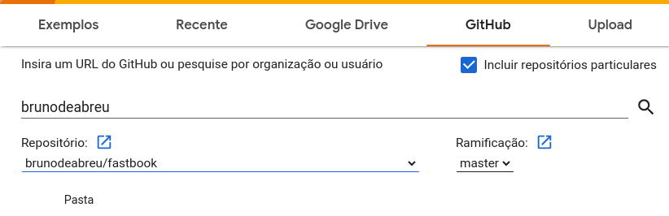

Deep learning for Coders fast.ai
A hands-on coding course from fast.ai
Cap 4 NLP
The idea of fine tune NLP model started with ULMFIT, which is first presented in a fast.ai course
The ULMFIT process using RNN:
- Build a language model using wikipedia text (Wikitext 103) , this model try to predict the next word of Wikipedia article.
- Add more epochs using IMDb movies review, now our model are good to predict next word of IMDb reviews
- Fine tune tune to predict whether or not a movie review was positive or negative sentiment
Tokenization :
- The Huggingface transformers use the Dataset object to tokenize the text
- Transform the pandas dataframe into huggingface dataset
from datasets import Dataset.DatasetDict
ds = Dataset.from_pandas(df)
A deep learning model expects numbers as inputs, so we need:
- Tokenization : Split each text up into words(or actually, as we’ll see, into tokens)
- Numericalization: Convert each word (or token) into a number (unique ID)
Before we start to tokenizer we need to decide what model to use, for instance access Hugging Face - Models and search on model hub.
AutoTokenizer will create a tokenizer appropriae for a given model
model_nm = 'microsoft/debert-v3-small'
from transformers import AutoModelForSequenceClassification, AutoTokenizer
tokz = AutoTokenizer.from_pretrained(model_mn)Overfitting and Validation/Test dataset
- In time series instead of remove data from the middle it is better to truncate the last weeks
- Fastai will show the metrics from validation dataset
- How (and why) to create a good validation set
Cap 3 How does a neural net reall work ?
Whch image models are best ?
The kaggle notebook Which image models are best
PyTorch Image Models (timm) is a library by Ross Wightman which provides state-of-the-art pre-trained computer vision models.
To use timm we need :
- Install :
conda install timmorpip install timm - Import :
import timm - Sample of list convnext models:
timm.list_models('convnext')
Understand the model
Categories : fast.ai always save the vocab or categories inside the data loaders
learn.dls.vocabWhat is model.pkl file ?
The model or learn there are two main things :
- The list of pre-processing steps to prepare your image to model
- The trained model, the arquitecture or layers
The below model was trained based on resnet18
Sequential(
(0): Sequential(
(0): Conv2d(3, 64, kernel_size=(7, 7), stride=(2, 2), padding=(3, 3), bias=False)
(1): BatchNorm2d(64, eps=1e-05, momentum=0.1, affine=True, track_running_stats=True)
(2): ReLU(inplace=True)
(3): MaxPool2d(kernel_size=3, stride=2, padding=1, dilation=1, ceil_mode=False)
(4): Sequential(
(0): BasicBlock(
(conv1): Conv2d(64, 64, kernel_size=(3, 3), stride=(1, 1), padding=(1, 1), bias=False)
(bn1): BatchNorm2d(64, eps=1e-05, momentum=0.1, affine=True, track_running_stats=True)
(relu): ReLU(inplace=True)
(conv2): Conv2d(64, 64, kernel_size=(3, 3), stride=(1, 1), padding=(1, 1), bias=False)
(bn2): BatchNorm2d(64, eps=1e-05, momentum=0.1, affine=True, track_running_stats=True)
)
(1): BasicBlock(
(conv1): Conv2d(64, 64, kernel_size=(3, 3), stride=(1, 1), padding=(1, 1), bias=False)
(bn1): BatchNorm2d(64, eps=1e-05, momentum=0.1, affine=True, track_running_stats=True)
(relu): ReLU(inplace=True)
(conv2): Conv2d(64, 64, kernel_size=(3, 3), stride=(1, 1), padding=(1, 1), bias=False)
(bn2): BatchNorm2d(64, eps=1e-05, momentum=0.1, affine=True, track_running_stats=True)
)
)
(5): Sequential(
(0): BasicBlock(
(conv1): Conv2d(64, 128, kernel_size=(3, 3), stride=(2, 2), padding=(1, 1), bias=False)
(bn1): BatchNorm2d(128, eps=1e-05, momentum=0.1, affine=True, track_running_stats=True)
(relu): ReLU(inplace=True)
(conv2): Conv2d(128, 128, kernel_size=(3, 3), stride=(1, 1), padding=(1, 1), bias=False)
(bn2): BatchNorm2d(128, eps=1e-05, momentum=0.1, affine=True, track_running_stats=True)
(downsample): Sequential(
(0): Conv2d(64, 128, kernel_size=(1, 1), stride=(2, 2), bias=False)
(1): BatchNorm2d(128, eps=1e-05, momentum=0.1, affine=True, track_running_stats=True)
)
)
(1): BasicBlock(
(conv1): Conv2d(128, 128, kernel_size=(3, 3), stride=(1, 1), padding=(1, 1), bias=False)
(bn1): BatchNorm2d(128, eps=1e-05, momentum=0.1, affine=True, track_running_stats=True)
(relu): ReLU(inplace=True)
(conv2): Conv2d(128, 128, kernel_size=(3, 3), stride=(1, 1), padding=(1, 1), bias=False)
(bn2): BatchNorm2d(128, eps=1e-05, momentum=0.1, affine=True, track_running_stats=True)
)
)
(6): Sequential(
(0): BasicBlock(
(conv1): Conv2d(128, 256, kernel_size=(3, 3), stride=(2, 2), padding=(1, 1), bias=False)
(bn1): BatchNorm2d(256, eps=1e-05, momentum=0.1, affine=True, track_running_stats=True)
(relu): ReLU(inplace=True)
(conv2): Conv2d(256, 256, kernel_size=(3, 3), stride=(1, 1), padding=(1, 1), bias=False)
(bn2): BatchNorm2d(256, eps=1e-05, momentum=0.1, affine=True, track_running_stats=True)
(downsample): Sequential(
(0): Conv2d(128, 256, kernel_size=(1, 1), stride=(2, 2), bias=False)
(1): BatchNorm2d(256, eps=1e-05, momentum=0.1, affine=True, track_running_stats=True)
)
)
(1): BasicBlock(
(conv1): Conv2d(256, 256, kernel_size=(3, 3), stride=(1, 1), padding=(1, 1), bias=False)
(bn1): BatchNorm2d(256, eps=1e-05, momentum=0.1, affine=True, track_running_stats=True)
(relu): ReLU(inplace=True)
(conv2): Conv2d(256, 256, kernel_size=(3, 3), stride=(1, 1), padding=(1, 1), bias=False)
(bn2): BatchNorm2d(256, eps=1e-05, momentum=0.1, affine=True, track_running_stats=True)
)
)
(7): Sequential(
(0): BasicBlock(
(conv1): Conv2d(256, 512, kernel_size=(3, 3), stride=(2, 2), padding=(1, 1), bias=False)
(bn1): BatchNorm2d(512, eps=1e-05, momentum=0.1, affine=True, track_running_stats=True)
(relu): ReLU(inplace=True)
(conv2): Conv2d(512, 512, kernel_size=(3, 3), stride=(1, 1), padding=(1, 1), bias=False)
(bn2): BatchNorm2d(512, eps=1e-05, momentum=0.1, affine=True, track_running_stats=True)
(downsample): Sequential(
(0): Conv2d(256, 512, kernel_size=(1, 1), stride=(2, 2), bias=False)
(1): BatchNorm2d(512, eps=1e-05, momentum=0.1, affine=True, track_running_stats=True)
)
)
(1): BasicBlock(
(conv1): Conv2d(512, 512, kernel_size=(3, 3), stride=(1, 1), padding=(1, 1), bias=False)
(bn1): BatchNorm2d(512, eps=1e-05, momentum=0.1, affine=True, track_running_stats=True)
(relu): ReLU(inplace=True)
(conv2): Conv2d(512, 512, kernel_size=(3, 3), stride=(1, 1), padding=(1, 1), bias=False)
(bn2): BatchNorm2d(512, eps=1e-05, momentum=0.1, affine=True, track_running_stats=True)
)
)
)
(1): Sequential(
(0): AdaptiveConcatPool2d(
(ap): AdaptiveAvgPool2d(output_size=1)
(mp): AdaptiveMaxPool2d(output_size=1)
)
(1): fastai.layers.Flatten(full=False)
(2): BatchNorm1d(1024, eps=1e-05, momentum=0.1, affine=True, track_running_stats=True)
(3): Dropout(p=0.25, inplace=False)
(4): Linear(in_features=1024, out_features=512, bias=False)
(5): ReLU(inplace=True)
(6): BatchNorm1d(512, eps=1e-05, momentum=0.1, affine=True, track_running_stats=True)
(7): Dropout(p=0.5, inplace=False)
(8): Linear(in_features=512, out_features=2, bias=False)
)
)
- To check detail about one layer we can use
get_submodulefrom pyTorch, so lets check 0.4.0.conv1 layer
l = learn.model.get_submodule('0.4.0.conv1')
lOutput:
Conv2d(64, 64, kernel_size=(3, 3), stride=(1, 1), padding=(1, 1), bias=False)
Parameters
list(l.parameters())Ouput is a tensor:
[Parameter containing:
tensor([[[[ 5.7570e-02, -9.5167e-02, -2.0318e-02],
[-7.4519e-02, -7.9924e-01, -2.1283e-01],
[ 6.5605e-02, -9.6507e-02, -1.2085e-02]],
[[-6.9990e-03, 1.4247e-02, 5.3876e-04],
[ 4.1250e-02, -1.6123e-01, -2.3197e-02],
[ 3.2788e-03, 7.1502e-03, 7.1681e-02]],
[[-2.3627e-09, -3.9269e-08, -3.2971e-08],
[ 2.1737e-08, 8.3299e-09, 1.2543e-08],
[ 1.1381e-08, 8.8095e-09, 1.5506e-08]],
...,Loss function:
Is the function that calculate the error metric that we would minimize
Sample:
MSE
def mse(preds, acts): return ((preds - acts)**2).mean()How do we minimize the loss function ?
- We can change the parameters and see if loss improves
- Or use derivative, basically derivative tells you : if you increase the input, your output increase or decrease this is the slope or gradient
- To request pyTorch to calculate the gradient just need to set
requires_grad()to a tensor - If we call
loss.backward()It will calculate the gradient on the result of loss function
Learning Rate
is a Hyperparameter that we use to calculate parameters
Optimization - Gradient descent
- The goal is minimize the loss function by deacrease this gradient multiplying by a small number such as
0.01this number is the Learning rate - On the end of process we end up with a small loss
- If learning rate is two small, it will take so long time to try to converge
- If learning rate is two big will never converge
Optimization - Gradient descent
- The goal is minimize the loss function by deacrease this gradient multiplying by a small number such as
0.01this number is the Learning rate - On the end of process we end up with a small loss

ReLU
def rectified_liner(m,b,x):
y = m*x+b
return torch.clip(y, 0.)With this function we can use double or more ReLu and manipulate more dimmendations and construct a precise model
Matrix Multiplication
How to do a marix multiplication matrixmultiplication.xyz
Cap 02 - Production
Clean the data
Before clean the data train the model ?
Diffent ways to resize and transform the image (this is in-memory image transformation)
ResizeMethod.Squish: Make sure we can see the whole pictureResizeMethod.Pad, pad_mode='zeros': can see the whole image with better ratioRandomResizeCrop: Different bits (crop/size) of image each time it is called Data Augmentation, can also useaug_transforms()
Confusion Matrix
- We can use the confustion matrix to identify the hardiest category to identify/classify
- On fastai there are the
ClassificationInterpretationobject that will generate the Confusion Matrix
interp = ClassificationInterpretation.from_learn(lern)
interp.plot_confusion_matrix()- We can plot Top Losses It tells us the places where the loss is the highest
interp = ClassificationInterpretation.from_learn(lern)
interp.plot_top_losses(5, nrows=1, figsize=(17,4))- After use those functions we can call
ImageClassifierCleaner()to clean up the ones that are wrongly label on dataset and remove from dataset
Before we clean up the dataset, always build a model to find out what things are difficult to recognize in your dataset and to find the things that the model can help you find data problems
Cap 01 - Intro
Notes from video 1
Motivation :
How to build a compyter vision classifier ?
- A pixel is recognized by RGB number, that going to be an input to computer vision model
- To train a colection of image we need a DataBlock, this provides to fastai all the information it needs to create a Computer Vision model
- When we create the model using
visual_learnerit going to learn from each image that you input - To predict and check we call
.predictit will return a probability
How the model learn ?
- Each layer will learn small things, like diagonal, circle ….
Fastai Lib
- Builded on top of pyTorch
- We can use colab, gradient, sagemaker, kaggle to develop
- Samples simple computer vision classifier:
DataBlock
How do I get “this data” into my model ?
We create a DataBlock and according the structure and options fastai will know the type of model to create, we need to inform:
- What kind of input do we have ? ImageBlock
- What kind of output ? CategoryBlock
- Provide a list of ALL image files and path get_image_files
- Reserve some data to validate RandomSplitter
- How do we know the correct label of photo parent_label
- Transform the image Resize
This will create a DataBlock using a pyTorch function dataloaders, this is what pyTorch interate to get bunch of data
dls = DataBlock(
blocks=(ImageBlock, CategoryBlock),
get_items=get_image_files,
splitter=RandomSplitter(valid_pct=0.2, seed=42),
get_y=parent_label,
item_tfms=[Resize(192, method='squish')]
).dataloaders(path, bs=32)
dls.show_batch(max_n=6)To read more https://docs.fast.ai/tutorial.datablock.html
On the end we will have a dls (dataloaders) object that contains iterators where pyTorch can run through to grab batches of random data (training and validation ) images
What is a Learner ?
This is a critical concept in fastai. the learner is something which combines a model (the Neural Network function) and the data we use to train
Learner = NN fuction + data
To create a learner we pass :
learn = vision_learner(dls, resnet18, metrics=error_rate)
learn.fine_tune(3)- data (dls)
- model resnet18 , this is the neural network function
- What is resnet18? Someone trained this model to recognize over a million of images of over 1000 different types from ImageNet dataset and create those weights
- Metrics
Fastai integrate with Pytorch Images models (timm) a collection of computer vision models, layers, utilities, optimizers, etc…
To complete the train, fastai have a method fine_tune that takes those pre-trained weights and adjusts to teach the model the differences between our dataset and ImageNet dataset or any other.
To use the model/learn, predict
Call .predict passing an image and it return the probability(prob).
It is not only computer vision we can work with :
- To create a Segmentation we can use
- SegmentationDataLoaders
- unet_learner as a learner
- Tabular analysis
- Import lib :
from fastai.tabular.all import * TabularDataLoader.from_csvto create the dataloadertabular_learnerto create the learnerlearn.fit_one_cycle(2)to fit the model
- Import lib :
- Collaborative filtering (recommendation system)
- Import lib
from fastai.collab import * CollabDataLoader.from_csvCreate the dataloader- The learner
collab_learnerandfine_tuneorfit_one_cycle
- Import lib
- NLP, etc…
Prep-Work
1. Terminal
On Windows we can install PowerShell and WSL using, the first time you
wsl --install- Tips :
- Terminal Full Screen :
<Alt+Enter> - Switch between users :
sudo -u <user> -i - Check version and python location :
which python - Install everything in
homedirto do not mix the system python/files with our version of python used to DEV and experiment
- Terminal Full Screen :
1.1 tmux
To install tmux sudo apt install tmux
- https://tmuxcheatsheet.com/
Ctrl + b + %: Divide terminal in the middle verticalCtrl + b + ": Divide terminal in the middle horizontalCtrl + b + direction: Move between terminalsCtrl + b + z: zoom in or zoom out a spefic terminalCtrl + d: close
2. Install python
- Github for conda mini-forge and mamba-forge installer conda-forge/miniforge
- Linux Manbaforge install
wget https://github.com/conda-forge/miniforge/releases/latest/download/Mambaforge-Linux-x86_64.sh- Install Mambaforge, this going to install several libsn
bash Mambaforge-Linux-x86_64.sh - The command
which pythonshould show right now/home/bruno/mambaforge/bin/python
3. Setup fastai
3.1 Setup conda install
To setup fastai in our notebook Github-Fastsetup
- Run the wget to donwload the setupconda.sh and install
wget https://raw.githubusercontent.com/fastai/fastsetup/master/setup-conda.sh
bash setup-conda.sh
4. Install other packages using mamba
Conda and Mamba is two ways of doing the same thing, however today mamba is very fast
Install ipython :
mamba install ipythonPytorch install : pytorch get-started
CPU :
mamba install pytorch torchvision torchaudio cpuonly -c pytorchCUDA :
mamba install pytorch torchvision torchaudio pytorch-cuda=11.7 -c pytorch -c nvidiaTest : ipython -> import torch
Install Jupyter Lab :
mamba install jupyterlab- Create a alias to jupyter lab –no-browser :
alias jl=jupyter lab --no-browser
- Create a alias to jupyter lab –no-browser :
Install ipywidgets :
mamba install ipywidgets
5. Git
Git repository is a folder that contain files and sub-folders that we can store and git keeps a copy of every version of files
5.1 Create new repo
The below figure describe how to create a new repo we can :
- Make the repo private or public
- Add a readme file
- Configure .gitignore
- Choose a license
s ::: {.callout-important} DO NOT share password or keys on github :::
5.2 Configure SSH Key o Github and clone .git repository
STEPS :
On terminal create a public key
ssh-keygen, it will create public (id_rsa.pub) and private (id_rsa) keysIn github.com/settings/ssh/ click in
New SSH Keyand add the content of id_rsa.pubNow you will be able to clone the .git repository and save your changes
5.3 Basic Cmds : Commit, push, pull, status
The complete list of git commands
- Commit :
git commit -m <message> - Push :
git push - Pull :
git pull - add :
git add <file> - remove :
git rm <file> - status :
git status
6. Jupyter lab
To start the jupyter notebook we can issue : jupyter lab --no-browser
Tip :
create an alias like
alias jl=jupyter lab --no-browserand just issuejlto start the jupyter lab
7. Clone the Fastai book and install fastai
STEPS:
Go to fastbook on github and click on Fork to create your copy of the book
Clone your version of book :
git clone git@github.com:brunodeabreu/fastbook.gitInstall fastai :
mamba install -c fastchan fastaiInstall fastbook :
mamba install -c fastchan fastbokorpip instal -Uqq fastbook
When we install fastbook it also install fastai
8. Create an enviroment
STEPS :
Create :
mamba create -n tmp 'python<3.10'fastcoreActivate:
mamba activate tmpDeactivate:
mamba deactivate tmp
To return to (base) we can only issue conda activate
9. Creating paperspace notebook
Using https://www.paperspace.com/artificial-intelligence we can get a FREE GPU server.
We can signup with github or gmail account and select gradient it will request you to create a project and after that you can create notebooks/servers.
10. Google Colab
STEPS :
Open colab.research.google.com, you can sigup with your google account
Go to Ferramentas -> Configurações -> Gihub -> Autorizar com Github
Arquivo -> Abrir notebook -> Select your fastbook repository, if you do not have your own copy fork from fastai/fastbook

Select the notebook and open in a new tab
Change the enviroment to TPU : Go to Ambiente de execução -> Alterar tipo de ambiente de exeção -> Select T4 GPU
11. Best option to access the book and notebooks
Open the course.fast.ai on Colab session click on each chapter.